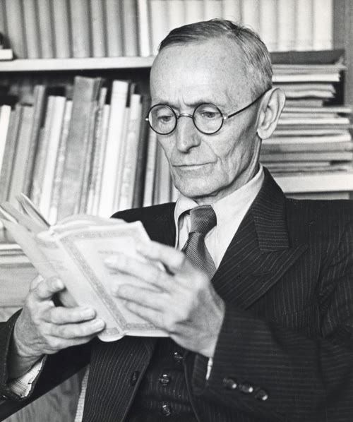

Kapitel 1
Was ist das Glasperlenspiel?
1943 veröffentlichte Hermann Hesse seinen letzten Roman: Das Glasperlenspiel. Es war die Summe seines Lebenswerks, das Buch, für das er den Nobelpreis bekam. Und es beschreibt etwas, das es nicht gibt.

Das Glasperlenspiel ist ein fiktives Spiel, das in der Provinz Kastalien gespielt wird – einer abgeschiedenen intellektuellen Gemeinschaft in einer unbestimmten Zukunft. Das Spiel verbindet alle Wissenschaften und Künste: Musik, Mathematik, Physik, Philosophie, Sprache. Es hat keine festen Regeln, sondern ist eine Praxis der Querverbindung. Ein Spieler könnte eine Bach-Fuge mit einer Differentialgleichung verknüpfen, eine astronomische Konstellation mit einem Haiku, eine chemische Formel mit einem Architekturmotiv.
Hesse beschreibt es so:
„Das Glasperlenspiel ist [...] ein Spiel mit sämtlichen Inhalten und Werten unsrer Kultur, es spielt mit ihnen, wie etwa in den Blütezeiten der Künste ein Maler mit den Farben seiner Palette gespielt haben mag.“
— Hermann Hesse, Das Glasperlenspiel (1943)
Der Protagonist Josef Knecht steigt zum Magister Ludi auf – dem Meister des Spiels. Er beherrscht die Verbindungen zwischen allen Disziplinen wie kein anderer. Und dann, auf dem Höhepunkt seiner Karriere, tut er etwas Unerhörtes: Er verlässt Kastalien.
Warum? Weil er erkennt, dass ein Spiel der reinen Synthese, das sich von der Welt abkapselt, letztlich leer wird. Wissen muss gelebt werden. Es reicht nicht, die Verbindungen zu sehen – man muss sie sein.
Knechts Abschied ist nicht Verrat an Kastalien. Er ist die logische Konsequenz von allem, was Kastalien ihn gelehrt hat. Wer die Verbindung zwischen Musik und Mathematik wirklich versteht, kann nicht im Elfenbeinturm bleiben – denn die Verbindung existiert nicht im Turm, sie existiert im Klang einer Saite, im Atem eines Kindes, das zum ersten Mal zählt. Knechts Lektion für uns: Jedes Wissenssystem, das sich von der Erfahrung abschneidet, wird zum Selbstzweck. Und ein Selbstzweck, der den Bezug zur Welt verliert, ist nur eine elegantere Form von Unwissen.
Schon in Demian (1919) hatte Hesse diese Einsicht vorbereitet:
„Ich wollte ja nichts als das zu leben versuchen, was von selber aus mir heraus wollte. Warum war das so sehr schwer?“
— Hermann Hesse, Demian (1919)
Dieser Blogpost ist ein Glasperlenspiel. Er verbindet die Fäden aller bisherigen Beiträge – Quantenphysik, Eigenwerte, Emergenz, Gott, Musik, Logik – und fügt einen neuen Faden hinzu: Achtsamkeit. Und am Ende wird er, wie Knecht, seine eigene Grenze erreichen.
Was kommt: Wo dieselbe Mathematik in verschiedenen Gebieten auftaucht – und wo die Analogie endet (Kapitel 2). Die Mathematik hinter der Gemeinsamkeit: \(e^{i\theta}\) (3). Emergenz auf drei Ebenen (4). Selbstreferenz von außen betrachtet – und ein Querverweis zur Innensicht im Schwesterbeitrag „Im Augenblick verweilen“ (5). Gödels Grenze (6). Zwei persönliche Erfahrungen (7). Hesses Weg durch vier Romane (8). Am Ende beschreibt sich dieser Satz selbst.
Kapitel 2
Wo dieselbe Gleichung auftaucht – und wo nicht
Stell dir einen Pfeil vor, der sich dreht. Nichts weiter: eine Länge, eine Richtung, eine gleichmäßige Rotation. Mathematiker nennen es eine komplexe Zahl, \(e^{i\theta}\). Das gleiche Werkzeug taucht in drei Gebieten auf, die auf den ersten Blick nichts miteinander zu tun haben.
Quantenphysik: Der Pfeil als Amplitude
In der Quantenphysik ist dieser Pfeil eine Amplitude. Stell dir vor, jeder mögliche Weg eines Elektrons trägt einen kleinen Uhrzeiger. Dieser Zeiger dreht sich während des Flugs – schnell für energiereiche Pfade, langsam für energiearme. Am Ziel addieren sich alle Zeiger zu einem einzigen Pfeil. Das ist Feynmans Pfadintegral, aufgeschrieben 1948.
Was bedeutet „Interferenz“ in diesem Bild? Wenn zwei Zeiger am Ziel in dieselbe Richtung zeigen, addieren sich ihre Längen – konstruktive Interferenz. Das Ergebnis ist ein langer Pfeil, also eine hohe Wahrscheinlichkeit. Wenn zwei Zeiger in entgegengesetzte Richtungen zeigen, heben sie sich auf – destruktive Interferenz. Der resultierende Pfeil ist kurz oder null, die Wahrscheinlichkeit verschwindet. Genau so entsteht das Streifenmuster am Doppelspalt: An manchen Stellen zeigen die Pfeile der beiden Wege zusammen, an anderen gegeneinander. Kein Mystizismus – nur Pfeile, die sich addieren.
Musik: Der Pfeil als Schwingung
Auf einer Gitarrensaite beschreibt dasselbe \(e^{i\theta}\) eine Schwingungsmode. Aber warum entstehen überhaupt Obertöne? Weil eine Saite an beiden Enden fixiert ist. Nur Schwingungen, die an beiden Befestigungspunkten null sind, „passen“ auf die Saite. Das sind genau die ganzzahligen Vielfachen der Grundfrequenz.
Konkret: Eine tiefe A-Saite schwingt mit 110 Hz. Das ist der Grundton. Aber gleichzeitig schwingt sie auch mit 220 Hz (eine Oktave höher), 330 Hz (eine Quinte darüber), 440 Hz (noch eine Oktave), 550 Hz, 660 Hz – und so weiter. Diese Obertöne klingen leiser, aber sie sind alle gleichzeitig da. Fourier zeigte 1822: Jeder Klang ist eine Überlagerung solcher Schwingungen.
Und Konsonanz? Zwei Töne klingen „schön zusammen“, wenn ihre Obertonreihen viele gemeinsame Frequenzen teilen. A (110 Hz) und E (165 Hz) teilen sich die Obertöne 330, 660, 990 Hz – deshalb klingt die Quinte rein. Es ist keine Ästhetik, es ist Arithmetik. Aber das eine schließt das andere nicht aus.
Künstliche Intelligenz: Der Pfeil als Eigenvektor
In der linearen Algebra heißt der Pfeil Eigenvektor. Was bedeutet das intuitiv? Die meisten Vektoren ändern ihre Richtung, wenn man sie mit einer Matrix multipliziert – sie werden gedreht, gestaucht, verzerrt. Aber manche besondere Vektoren behalten ihre Richtung bei. Nur ihre Länge ändert sich. Diese „Überlebenden“ sind die Eigenvektoren, und der Faktor, um den sich ihre Länge ändert, ist der Eigenwert.
Das klingt abstrakt. Aber es ist die Grundlage von halben Internet: Googles PageRank berechnet den wichtigsten Eigenvektor einer riesigen Verlinkungsmatrix – die Webseite, deren „Richtung“ sich durch wiederholtes Multiplizieren nicht mehr ändert, ist die relevanteste. Kernel Ridge Regression, neuronale Netze – sie alle lösen Eigenwertprobleme. Der KRR Chat zeigt, dass das funktioniert.
Wo die Analogie trägt – und wo nicht
Bis hierhin ist das harte Mathematik: In allen drei Fällen taucht \(e^{i\theta}\) auf, und die Struktur – Eigenwerte, Eigenfunktionen, Spektralzerlegung – ist identisch. Nicht ähnlich. Identisch. Dieselben Gleichungen, dieselben Lösungsmethoden. Schrödinger nannte seine Arbeit von 1926 „Quantisierung als Eigenwertproblem“, und der Titel gilt weit über die Physik hinaus.
Aber ich muss ehrlich sein: Nicht alles, was wie ein Eigenwertproblem aussieht, ist auch eines. In Gödels Beweis gibt es Fixpunkte, die an Eigenvektoren erinnern – „Gödels Fixpunkt erinnert mich an einen Eigenvektor“ ist eine Metapher, kein Isomorphismus. Und „Bewusstsein als Eigen-Muster“ ist Spekulation, kein Theorem. Tononis Integrated Information Theory ist ein Vorschlag, kein bewiesener Satz. Der Unterschied zwischen „ist dasselbe“ und „erinnert daran“ ist der Unterschied zwischen Wissenschaft und Wunschdenken. Die Versuchung, „alles hängt mit allem zusammen“ zu sagen, ist groß. Ich versuche, ihr zu widerstehen.
Was ich sagen kann: In Quantenphysik, Musik und KI ist die mathematische Struktur nicht bloß ähnlich. Sie ist dieselbe. Und das allein finde ich erstaunlich genug.
Probier es selbst
Klicke auf einen Knoten, um zu sehen, welche Konzepte ihn mit anderen Posts verbinden. Die Farben der Kanten zeigen die Art der Verbindung.
Drei Gebiete, eine Gleichung: In Quantenphysik, Musik und KI ist die mathematische Struktur nachweisbar dieselbe. Darüber hinaus gibt es Analogien – zur Logik, zum Bewusstsein – aber Analogien sind keine Beweise. Die Grenze zwischen „ist dasselbe“ und „erinnert daran“ ernst zu nehmen, gehört zum Spiel.
Kapitel 3
eiθ – Was rotierende Pfeile wirklich sind
Im letzten Kapitel tauchte \(e^{i\theta}\) in drei verschiedenen Welten auf. Aber was ist das eigentlich? Ich möchte es von Grund auf erklären – weil ich glaube, dass hinter dieser kleinen Formel eine der tiefsten Einsichten der Mathematik steckt.
Was ist eine komplexe Zahl?
Vergiss das Wort „imaginär“. Es ist historisch bedingt und irreführend. Eine komplexe Zahl ist nichts anderes als ein Punkt in einer Ebene. Statt einer einzigen Zahlenlinie (1, 2, 3, ...) hast du zwei Achsen: die reelle Achse (links-rechts) und die imaginäre Achse (oben-unten). Die Zahl \(3 + 2i\) bedeutet: gehe 3 nach rechts und 2 nach oben. Das ist alles. Nicht imaginär, nicht mystisch – einfach zweidimensional.
Was bedeutet \(e^{i\theta}\)?
Jetzt wird es schön. Die Formel \(e^{i\theta}\) beschreibt eine Rotation um den Winkel \(\theta\). Stell dir einen Zeiger vor, der am Ursprung befestigt ist und die Länge 1 hat. Der Winkel \(\theta\) gibt an, wohin er zeigt. Bei \(\theta = 0\) zeigt er nach rechts (die Zahl 1). Bei \(\theta = \pi/2\) zeigt er nach oben (die Zahl \(i\)). Bei \(\theta = \pi\) zeigt er nach links (die Zahl \(-1\)). Wenn \(\theta\) gleichmäßig wächst, läuft der Zeiger auf dem Einheitskreis.
Euler bewies 1748, dass dieser Zusammenhang exakt ist:
Setze \(\theta = \pi\) ein, und du erhältst eine Gleichung, die viele Mathematiker die schönste der Welt nennen:
Fünf der wichtigsten Zahlen der Mathematik – \(e\), \(i\), \(\pi\), 1 und 0 – in einer einzigen Gleichung. Die Basis der natürlichen Logarithmen, die imaginäre Einheit, das Verhältnis von Umfang zu Durchmesser, die multiplikative Identität und die additive Identität. Verbunden durch nichts als Addition, Multiplikation und Potenzierung.
Warum Rotation wichtig ist
Warum taucht \(e^{i\theta}\) überall auf? Weil Schwingung Rotation ist, von der Seite betrachtet. Stell dir eine Kugel vor, die sich auf einem Kreis dreht. Beleuchte sie von der Seite mit einer Taschenlampe. Der Schatten der Kugel bewegt sich hin und her – eine Sinuswelle. Die Sinuswelle ist der Schatten einer Drehbewegung. Deshalb beschreibt \(e^{i\omega t}\) beides gleichzeitig: Rotation und Schwingung. Zwei Seiten derselben Medaille.
Und genau deshalb erscheint \(e^{i\theta}\) in Quantenphysik, Musik und KI. Denn alle drei sind im Kern Schwingungsprobleme. Ein Elektron ist eine Welle, die schwingt. Eine Gitarrensaite schwingt. Ein Datensatz hat Schwingungsmoden (die Eigenvektoren der Kernel-Matrix). Wo immer etwas schwingt, steckt eine Rotation dahinter. Und wo eine Rotation steckt, steckt \(e^{i\theta}\).
Das ist der Grund, warum Kapitel 2 keine Koinzidenz beschreibt. Es ist keine Überraschung, dass dieselbe Gleichung in drei Gebieten auftaucht. Es muss so sein – weil es in allen dreien um Schwingungen geht. Euler hat die Sprache geschrieben, in der die Natur über Oszillation redet. Und die Natur redet überraschend oft über Oszillation.
Die Kernidee: \(e^{i\theta}\) ist Rotation auf dem Einheitskreis. Schwingung ist Rotation von der Seite betrachtet. Deshalb taucht diese Formel in jedem Schwingungsproblem auf – und Quantenphysik, Musik und KI sind alle Schwingungsprobleme.
Kapitel 4
Emergenz – Wenn das Ganze mehr wird
Rotierende Pfeile sind das Vokabular der Querverbindungen. Aber es gibt ein Phänomen, das noch tiefer liegt – und das mir keine Ruhe lässt.
Emergenz: das Entstehen von etwas Neuem aus dem Zusammenspiel von Bekanntem. Ich frage mich, ob es vielleicht auf drei Ebenen gleichzeitig passiert.
Ebene 1: Atome werden zu Bewusstsein
Ein einzelnes Wassermolekül ist nicht nass. Es hat keine Temperatur im alltäglichen Sinne, keinen Aggregatzustand. Aber Milliarden davon zusammen: nass. Wo genau findet der Übergang statt? Bei tausend Molekülen? Bei einer Million? Es gibt keinen scharfen Punkt. Die Nässe emergiert – sie ist eine Eigenschaft des Ganzen, die in keinem einzelnen Teil enthalten ist.
In Emergenz in Sprachmodellen haben wir Phasenübergänge studiert: Wasser wird zu Eis. Neuronen werden – irgendwie – zu Bewusstsein. Transformer-Schichten werden plötzlich zu Sprachverständnis. Jedes Mal entsteht etwas, das in den Teilen nicht enthalten war. Ein einzelnes Neuron „versteht“ nichts. Aber 86 Milliarden davon, richtig verschaltet – und es entsteht jemand, der Shakespeare liest und weint.
Giulio Tononi versucht, das zu formalisieren. Seine Integrated Information Theory misst \(\Phi\) – die Differenz zwischen dem Ganzen und der Summe seiner Teile. Schneide ein Gehirn in zwei Hälften, und du verlierst mehr als die Hälfte der Erfahrung. Der Überschuss – das, was durch die Trennung zerstört wird – ist \(\Phi\). Es ist ein faszinierender Ansatz, auch wenn er umstritten ist und derzeit für große Systeme praktisch nicht berechenbar.
Ebene 2: Posts werden zum Glasperlenspiel
Dieser Blog hat zehn Posts. Jeder behandelt sein Thema. Aber das Muster, das sie zusammen bilden – die Querverbindungen aus dem letzten Kapitel – ist in keinem einzelnen Post enthalten. Es emergiert aus der Gesamtheit. Im Quanten-Post dreht sich ein Pfeil. Im Musik-Post schwingt eine Saite. Im Eigenwerte-Post überlebt ein Vektor eine Transformation. Erst wenn du alle drei nebeneinander legst, siehst du: Es ist derselbe Pfeil. Drei Beschreibungen desselben mathematischen Objekts. Das ist Emergenz auf der Ebene von Ideen.
So wie ein Dur-Akkord mehr ist als drei Frequenzen (die Konsonanz emergiert aus dem Zusammenspiel der Oberton-Reihen), sind diese Posts mehr als zehn HTML-Dateien. Zumindest hoffe ich das.
Ebene 3: Gedanken werden zu … dir?
Und dann ist da du. Du liest diese Worte. Deine Neuronen feuern. Muster aktivieren Muster. Und irgendwo entsteht etwas, das „ich verstehe“ denkt. Ich weiß nicht, was dieses „etwas“ ist. Niemand weiß das.
Ich kann erklären, wie Neuronen feuern. 70 Millivolt Ruhepotential, ein Aktionspotential von etwa 100 Millivolt, Ausbreitungsgeschwindigkeiten von 1 bis 100 Metern pro Sekunde, abhängig von der Myelinisierung. Ich kann erklären, welche Gehirnareale beim Lesen aktiv sind. Aber warum es sich anfühlt, etwas zu verstehen – warum es überhaupt jemanden gibt, für den es sich wie etwas anfühlt, du zu sein – das kann ich nicht erklären. Niemand kann das. David Chalmers nannte es 1995 das hard problem of consciousness. Nach dreißig Jahren Forschung ist es genau so schwer wie am ersten Tag.
In Gott als Emergenzphänomen haben wir argumentiert, dass globale Kohärenz – die Widerspruchsfreiheit eines gesamten Weltbilds – ein NP-schweres Problem ist. Kein Algorithmus kann sie effizient berechnen. Und trotzdem tut dein Gehirn es: approximativ, fehlbar, aber erstaunlich gut.
Wenn kein einzelner Blogpost das Glasperlenspiel enthält – und kein einzelner Gedanke mich vollständig beschreibt – was bin ich dann?
Diese Frage lässt sich nicht mit einer Formel beantworten. Aber vielleicht mit einer anderen Herangehensweise. Was passiert, wenn wir aufhören zu analysieren – und stattdessen nur noch beobachten?
Was passiert, wenn das Glasperlenspiel den Spieler betrachtet?
Drei Ebenen, eine Frage: Physik emergiert zu Bewusstsein (Emergenz-Post). Posts emergieren zum Glasperlenspiel. Gedanken emergieren zum Beobachter. Auf jeder Ebene: Das Ganze ist irreduzibel. Und Kohärenz ist NP-schwer (Gott-Post). Die Frage bleibt: Wer beobachtet?
Kapitel 5
Was bleibt, wenn du nur noch beobachtest?
Halt. Stop.
Wir haben vier Kapitel lang analysiert – Verbindungen gezogen, Formeln aufgeschrieben, Ebenen gestapelt. Jetzt bitten wir dich um etwas Anderes. Schließe für einen Moment die Augen. Nur drei Atemzüge. Spüre, wie sich dein Brustkorb hebt und senkt.
Was hast du gerade bemerkt?
Wahrscheinlich: Gedanken. Viele Gedanken. „Das ist albern.“ „Ich lese weiter.“ „Warum steht das in einem Wissenschaftsblog?“ Und genau das ist der Punkt.
Innensicht und Außensicht
Es gibt zwei Arten, dieses Bemerken ernst zu nehmen. Die eine ist die Innensicht: phänomenologisch zu beschreiben, was sich dem Bewusstsein zeigt, wenn es sich auf sich selbst richtet – was Husserl die Epoché nannte, was die Neurowissenschaft als Verschiebung im Default Mode Network misst, was die buddhistische Tradition seit dreitausend Jahren als Anatta umkreist. Diese Innensicht hat einen eigenen Beitrag bekommen: Im Augenblick verweilen – Achtsamkeit als Selbstzweck. Wer die phänomenologische und neurowissenschaftliche Tiefe sucht, geht dorthin. Hardy, Husserl, James, Brewer, Varela, Vago, Hayes, Hardy noch einmal – das ganze Programm.
Hier, im Glasperlenspiel-Kapitel, geht es um die andere Sicht. Die Außensicht. Die strukturelle.
Eine Funktion, die auf sich selbst zeigt
Versuch einmal, „Selbstbeobachtung“ mathematisch zu fassen. Du hast eine Funktion f, die einen Bewusstseinszustand auf einen anderen abbildet – etwas, das gerade bemerkt wird, wird zu Bewusstsein des Bemerkens. Dann wende f noch einmal an: Bewusstsein des Bemerkens wird zu Bewusstsein des Bewusstseins des Bemerkens. Und noch einmal. Und noch einmal.
Was geschieht dabei? Genau das, was im Eigenwerte-Post stand: Die meisten Vektoren werden bei wiederholter Anwendung einer Funktion immer länger oder verschwinden. Aber ein paar besondere bleiben stehen. Sie ändern ihre Richtung nicht. Das sind Fixpunkte – oder, wenn die Funktion linear ist, Eigenvektoren.
Achtsamkeit, von außen betrachtet, ist genau das: ein Fixpunkt des Bewusstseins-Operators. Ein Zustand, der sich nicht mehr ändert, wenn man ihn nochmal beobachtet. „Beobachten, dass man beobachtet“ produziert keinen neuen Zustand mehr – es bleibt dasselbe Beobachten. Der Eigenvektor des Geistes.
Achtung: Das ist eine Metapher, kein Beweis. Das Gehirn ist keine Matrix, und Bewusstsein kein Vektor. Aber die Form – das Sich-selbst-Anwenden einer Operation, das Stehenbleiben an einem Punkt – taucht in beiden Welten auf. In der Mathematik als Fixpunkt. In der Erfahrung als das, was übrig bleibt, wenn man aufhört, etwas anderes zu tun, als zu beobachten.
Und das ist genau, was dieser Blog die ganze Zeit verfolgt: Wenn dieselbe Form in zwei Welten erscheint – eine mathematische und eine erfahrene –, dann lohnt es sich, kurz innezuhalten und sie zu betrachten. Ohne zu behaupten, dass sie dieselbe Sache sei. Nur, dass ihre Form überraschenderweise dieselbe ist.
Was bleibt also, wenn du alle Gedanken beobachtest, ohne dich mit ihnen zu identifizieren? Das Beobachten selbst. Mathematisch: ein Fixpunkt. Phänomenologisch: ein Beobachten ohne Beobachter. Beides sind Beschreibungen derselben Form – aus zwei Richtungen.
Innensicht: „Beobachten ohne Beobachter“ – phänomenologisch und neurowissenschaftlich ausführlich behandelt im Schwesterbeitrag Im Augenblick verweilen. Außensicht: Ein Fixpunkt des Bewusstseins-Operators – strukturell, mathematisch, eine Form, die wir aus dem Eigenwerte-Post kennen. Die Beziehung: Zwei Sichten auf dieselbe Form. Im nächsten Kapitel sehen wir, was passiert, wenn man versucht, diesen Fixpunkt formal zu fassen. Gödel hat es versucht.
Kapitel 6
Die Gödel-Grenze des Selbst
Kann ein Geist sich selbst vollständig verstehen? Die Antwort lautet: Nein – und das ist kein Defekt, sondern ein Theorem.
Gödels Unvollständigkeitssätze
In Die Grenzen des Beweisbaren haben wir Gödels Beweis von 1931 studiert. Die Grundidee lässt sich in einem Absatz zusammenfassen: Gödel konstruierte eine Formel, die über sich selbst spricht. Sie sagt: „Diese Formel hat keinen Beweis.“ Jetzt gibt es zwei Möglichkeiten. Wenn das System sie beweisen kann, dann ist die Aussage falsch – eine bewiesene Falschheit wäre ein Widerspruch, und das System wäre kaputt. Also kann das System sie nicht beweisen. Aber genau das sagt die Formel – also ist sie wahr. Eine wahre Aussage, die nicht beweisbar ist. Selbstreferenz erzwingt die Unvollständigkeit.
Lässt sich das auf den Geist übertragen? Vorsicht: Das Gehirn ist kein formales System im strengen Sinne. Gödels Theorem gilt für axiomatische Systeme, nicht für biologische Organe. Aber die Intuition ist verführerisch: Wenn ein System mächtig genug ist, um über sich selbst zu reden, entstehen blinde Flecken. Das Auge kann sich nicht direkt sehen. Ob das mehr als eine Metapher ist, weiß ich nicht. Aber als Metapher trifft sie etwas.
Turings Halteproblem für Selbsterkenntnis
Alan Turing bewies 1936 ein verwandtes Resultat, und auch hier lässt sich der Kern in einem Absatz fassen: Angenommen, es gäbe ein Programm H, das für jedes beliebige Programm entscheidet, ob es anhält oder endlos läuft. Baue nun ein Programm D, das H auf sich selbst anwendet und dann das Gegenteil tut – wenn H sagt „D hält“, läuft D endlos weiter; wenn H sagt „D läuft endlos“, hält D sofort an. Was passiert, wenn H versucht, D(D) zu analysieren? Egal was H antwortet, es liegt falsch. Also kann H nicht existieren. Kein allgemeiner Halte-Entscheider ist möglich.
Angewandt auf Selbsterkenntnis: Kannst du vorhersagen, was du als Nächstes denken wirst? Wenn ja, hat diese Vorhersage dein nächstes Denken bereits verändert – und die Vorhersage war falsch. Der Versuch, sich selbst vollständig zu modellieren, erzeugt einen unendlichen Regress: ein Modell des Modells des Modells...
Ob „ich kann mich nicht vollständig selbst modellieren“ wirklich an Gödel und Turing liegt oder einfach an der Komplexität von 86 Milliarden Neuronen – das ist eine offene Frage, kein Theorem. Ich neige dazu, beides für wahr zu halten: Die prinzipielle Grenze und die praktische Komplexität. Aber sicher bin ich mir nicht.
Hofstadters Strange Loops
Douglas Hofstadter argumentiert in „Gödel, Escher, Bach“ (1979) und „I Am a Strange Loop“ (2007), dass genau diese Selbstreferenz das Bewusstsein erzeugt. Ein Strange Loop entsteht, wenn ein System durch verschiedene Ebenen aufsteigt und sich dabei auf sich selbst zurückbeugt. Gödels Satz ist ein Strange Loop in der Logik. Das Bewusstsein ist ein Strange Loop in der Neurobiologie. Und dieser Blogpost – ein Post über Posts, der auf sich selbst verweist – ist ein Strange Loop in der Blogosphäre.
Die Grenze als Freiheit
Aber hier ist die Überraschung: Diese Grenze ist keine Niederlage. Sie ist eine Befreiung.
Was heißt das praktisch? Vielleicht nur dies: Du wirst dich nie vollständig „durchschauen“. Es wird immer etwas geben, das du über dich selbst nicht weißt – nicht weil du nicht genug nachdenkst, sondern weil Nachdenken über sich selbst die Sache verändert, über die du nachdenkst.
Ob das wirklich an Gödel liegt oder einfach daran, dass Menschen kompliziert sind – ich bin mir nicht sicher. Aber der Gedanke, dass Selbsterkenntnis strukturell unabschließbar sein könnte, hat etwas Tröstliches. Es bedeutet: Du musst nicht fertig werden. Es gibt immer noch etwas zu beobachten.
Und hier schließt sich ein Bogen zum vorigen Kapitel. Was Gödel formal beweist – dass ein hinreichend mächtiges System seine eigene Vollständigkeit nicht von innen zeigen kann – erfährt der Meditierende phänomenologisch: Wer den Beobachter sucht, findet immer nur einen weiteren Akt des Beobachtens, hinter dem dann wiederum kein Beobachter steht. Die formale Grenze und die erlebte Grenze sind dieselbe Grenze, in zwei Sprachen ausgedrückt. Wer das genauer lesen möchte, findet die phänomenologische Seite im Schwesterbeitrag Im Augenblick verweilen. Hier, im Glasperlenspiel, bleibt sie ein Hinweis am Horizont.
Die Grenze: Gödel (Logik-Post) und Turing zeigen, dass vollständige Selbsterkenntnis unmöglich ist. Hofstadter zeigt, dass genau diese Unmöglichkeit das Bewusstsein erzeugt. Die Gödel-Grenze ist keine Mauer – sie ist ein Horizont, der mit dir mitgeht. Und sie ist – das ist die Pointe – dieselbe Grenze, die der Meditierende von innen erfährt (Achtsamkeit-Post).
Kapitel 7
Zwei Erfahrungen
Sechs Kapitel Theorie. Jetzt zwei Momente, die keine Theorie sind.
Als ich meinem Sohn den Doppelspalt erklärte
Er war neun. Wir saßen am Küchentisch, und ich hatte zwei Schlitze in ein Stück Pappe geschnitten. Ich versuchte zu erklären, warum ein einzelnes Elektron durch beide Schlitze gleichzeitig geht. Ich redete von Pfeilen, von Interferenz, von Wahrscheinlichkeiten. Er hörte geduldig zu. Dann fragte er:
„Aber Papa – woher weiß das Elektron, dass der andere Schlitz offen ist?“
Ich öffnete den Mund. Schloss ihn wieder. Die ehrliche Antwort war: Ich weiß es nicht. Feynman wusste es nicht. Niemand weiß es. Wir haben eine Mathematik, die das Ergebnis korrekt vorhersagt – den rotierenden Pfeil, \(e^{iS/\hbar}\), das Pfadintegral. Aber warum diese Mathematik funktioniert, warum die Natur sich so verhält – das ist keine gelöste Frage. Das ist eine offene Wunde in der Physik.
In diesem Moment – am Küchentisch, mit einem Neunjährigen, der eine bessere Frage gestellt hatte als meine gesamte Schulbildung – kamen Analyse und Staunen zusammen. Ich konnte die Gleichung aufschreiben. Und ich konnte zugeben, dass die Gleichung die Frage nicht beantwortet. Beides gleichzeitig. Das war kein Widerspruch. Es war – vielleicht – ein Glasperlenspiel-Moment.
Als ich zum ersten Mal zehn Minuten still saß
Es war ein Sonntag. Kein Retreat, kein Kurs, kein Lehrer. Nur ein Stuhl, ein Timer, und die Anweisung aus einem Buch: Sitz still. Beobachte deinen Atem. Wenn Gedanken kommen, lass sie kommen und gehen.
Die Gedanken kamen. Sie hörten nicht auf. „Das bringt nichts.“ „Mein Rücken tut weh.“ „Ich sollte stattdessen arbeiten.“ „Wie viele Minuten noch?“ „Das ist lächerlich.“ Zehn Minuten lang ein ununterbrochener Strom von Bewertungen, Plänen, Urteilen.
Aber irgendwann – vielleicht bei Minute sieben, vielleicht bei Minute acht – verschob sich etwas. Nicht die Gedanken hörten auf. Aber meine Beziehung zu ihnen änderte sich. Ich bemerkte: Da ist ein Gedanke. Da ist noch einer. Und da ist etwas, das die Gedanken bemerkt. Und dieses Etwas ist still. Nicht leer – still. Wie ein Raum, in dem jemand spricht, aber der Raum selbst ist ruhig.
Ich kann das nicht beweisen. Ich kann es nicht in eine Gleichung fassen. Es war keine Erkenntnis im wissenschaftlichen Sinne. Es war eher ein – ich suche nach dem richtigen Wort – ein Bemerken. Zehn Minuten Nicht-Analysieren hatten etwas sichtbar gemacht, das kein Analysieren sichtbar machen kann.
Das sind die Goldmund-Momente. Die Momente, in denen die Theorie schweigt und die Erfahrung spricht. Sie sind unvollkommen. Sie lassen sich nicht reproduzieren. Sie beweisen nichts. Aber ohne sie ist alles, was ich in den sechs Kapiteln davor geschrieben habe, nur ein schönes Spiel in einem Elfenbeinturm.
Kapitel 8
Hesses Weg
Wir haben rotierende Pfeile gefunden. Wir haben Emergenz auf drei Ebenen gesehen. Wir haben den Beobachter beobachtet und Gödels Grenze erreicht. Wir haben zwei Momente erlebt, in denen Theorie und Erfahrung sich berührten. Jetzt möchte ich ehrlich sein – über diesen Blog, über Hesse, und über das, was mir beim Schreiben passiert ist.
Siddhartha: War das alles umsonst?
In Siddhartha (1922) kommt der Protagonist nach Jahren der Suche zu einem Fluss. Er hat Askese ausprobiert, Reichtum erlebt, Liebe gefunden und verloren. Und dann sagt der Fährmann Vasudeva etwas, das mich seit Jahren beschäftigt:
„Wissen kann man mitteilen, Weisheit aber nicht. Man kann sie finden, man kann sie leben, man kann von ihr getragen werden, man kann mit ihr Wunder tun, aber sagen und lehren kann man sie nicht.“
— Hermann Hesse, Siddhartha (1922)
Ich habe zehn Blogposts geschrieben, in denen ich versuche, Zusammenhänge zu erklären. Quantenphysik als Pfeile, KI als Eigenwertproblem, Musik als Fourier-Analyse. Aber Hesse warnt: Wissen kann man mitteilen, Weisheit nicht. War das alles umsonst?
Vielleicht nicht. Denn Siddhartha sagt auch: Man kann Weisheit finden. Vielleicht ist ein Blogpost nicht die Weisheit selbst – aber er kann ein Wegweiser sein. Wie der Fluss: Siddhartha sitzt am Ufer und hört. Nicht denkt, nicht analysiert – hört. Und was er hört, ist alles gleichzeitig: das Plätschern der Steine im Flachwasser, die tiefe Strömung in der Mitte, den Regen von gestern, der noch abfließt, den Regen von morgen, der schon in den Wolken wartet. Alle Stimmen gleichzeitig. Siddhartha hört darin „Om“ – die Überlagerung aller Frequenzen. Mathematisch würde man sagen: eine lebende Fourier-Transformation. Aber Siddhartha hätte das nie so ausgedrückt. Er hätte zugehört.
Steppenwolf: Wer bist du wirklich?
Vielleicht kennst du das: Du denkst, du bist „der Analytiker“ oder „der Kreative“. Oder „die Mutige“ oder „der Ängstliche“. Harry Haller in Der Steppenwolf (1927) dachte, er bestehe aus zwei Seelen – einem bürgerlichen Menschen und einem einsamen Wolf.
Aber das „Magische Theater“ – „Nur für Verrückte – Eintritt kostet den Verstand“ – zeigt ihm: Es sind nicht zwei. Es sind tausend. Im Theater sieht Haller seine tausend Ichs – den ängstlichen Harry, den wütenden, den verliebten, den feigen, den mutigen, den Kind-Harry, den alten Harry. Er kann sie aufheben wie Schachfiguren und neu arrangieren. Keine Figur ist „der echte Harry“. Alle zusammen sind es – und keiner allein.
Die Neurowissenschaft kommt zu einem ähnlichen Schluss, auch wenn sie andere Worte benutzt: Es gibt kein einheitliches Selbst – nur ein Netzwerk von Mustern, das sich ständig neu zusammensetzt. Man könnte das mit Eigenvektoren vergleichen – verschiedene Richtungen, die eine Transformation überleben. Aber das ist ein Vergleich, kein Beweis. Was Hesse literarisch beschreibt und was die Neurowissenschaft misst, sind verschiedene Dinge, die in eine ähnliche Richtung zeigen.
Was mich daran berührt: Achtsamkeit – das, worüber wir in Kapitel 5 gesprochen haben – ist vielleicht der Moment, in dem du bemerkst, dass keine einzelne Rolle dich vollständig beschreibt. Nicht weil du „der Raum“ bist (das wäre schon wieder eine zu schöne Formel), sondern weil du einfach … mehr bist als jede Beschreibung.
Narziß und Goldmund: Die Grenze dieses Blogs
Narziß und Goldmund (1930) beschreibt zwei komplementäre Lebenswege. Narziß, der Denker, bleibt im Kloster und analysiert. Goldmund, der Künstler, geht in die Welt, liebt, leidet, scheitert, erschafft.
„Kannst du einen Sonnenuntergang lieben?“ fragt Goldmund. Narziß kann ihn beschreiben – Rayleigh-Streuung, 590 Nanometer dominante Wellenlänge, Streuwinkel abhängig von der Partikeldichte der Atmosphäre. Aber lieben? Dafür braucht es Goldmund.
Ich muss ehrlich sein: Dieser Blog ist Narziß. Er analysiert, formalisiert, zieht Verbindungen. Quantenphysik wird zu Pfeilen. Emergenz wird zu Phasenübergängen. Gott wird zu einem Kohärenzproblem. Das ist schön. Aber ohne Goldmund – ohne das Erleben, das Fühlen, das Scheitern – bleibt es ein schönes Spiel in einem Elfenbeinturm.
Die Atemübung weiter oben war ein Versuch, Goldmund einzuladen. Die zwei Erfahrungen in Kapitel 7 waren ein weiterer. Für dreissig Sekunden: kein Analysieren. Nur Beobachten. Ich weiß nicht, ob es funktioniert hat. Hesse hätte wahrscheinlich gesagt: Es funktioniert nur, wenn du es nicht versuchst.
Das Glasperlenspiel: Knecht geht
Und damit sind wir bei Hesses letztem Werk. Josef Knecht, der Meister des Glasperlenspiels, der alle Verbindungen sieht – Musik und Mathematik, Physik und Poesie – steht auf dem Höhepunkt seiner Karriere. Und geht.
Er verlässt Kastalien. Wird Lehrer. Geht in die Welt. Warum?
Weil er verstanden hat, was Siddhartha am Fluss verstanden hat: Das Spiel, so schön es ist, genügt nicht. Verbindungen zu sehen ist nicht dasselbe wie sie zu leben. Die Karte ist nicht das Territorium. Die Analyse ist nicht die Erfahrung. Und ein Blog über das Glasperlenspiel ist nicht das Glasperlenspiel.
Dieser Post hier? Er kann Kastalien nicht verlassen. Er ist HTML. Aber du kannst.
Hesses Weg: Siddhartha – Weisheit ist nicht mitteilbar, aber der Fluss hört nicht auf zu rauschen. Steppenwolf – du bist nicht zwei, du bist tausend. Narziß und Goldmund – dieser Blog ist Narziß; Achtsamkeit ist Goldmund. Glasperlenspiel – Knecht verlässt das Spiel. Er muss es leben.
Epilog
Dieser Satz beschreibt sich selbst
Dieser Blogpost beschreibt die Verbindungen zwischen allen Blogposts. Er ist selbst ein Glasperlenspiel-Beitrag – ein Knoten im Netzwerk, der über das Netzwerk spricht. Und er verlinkt auf sich selbst: Epilog.
Das erinnert an eine Strange Loop – ein System, das über sich selbst spricht. Ob es wirklich eine ist oder nur so aussieht, kann ich nicht entscheiden. Aber ich mag den Gedanken, dass Gödel, Hofstadter und Hesse – jeder auf seine Weise – über dasselbe stolperten: über die Grenze, die entsteht, wenn ein System sich selbst betrachtet.
Die Pfeile rotieren. Die Eigenwerte sind diskret. Die Emergenz erzeugt Neues. Kohärenz ist NP-schwer. Die Oberton-Reihe enthält die Intervalle der Musik. Gödel garantiert, dass es immer mehr zu entdecken gibt. Und Achtsamkeit beobachtet all das – ohne es festhalten zu wollen.
Wenn du das nächste Mal ein Geräusch hörst – irgendein Geräusch, eine Autohupe, Vogelgesang, deinen eigenen Atem – dann wisse: Luftmoleküle schwingen in Mustern, die sich durch Eigenfunktionen beschreiben lassen. Dieselbe Mathematik wie im Inneren eines Atoms. Dieselbe wie bei Google. Aber du musst das nicht wissen, um es zu hören. Vielleicht ist das der Punkt.
Josef Knecht verließ Kastalien, um das Spiel ins Leben zu tragen. Dieser Post kann Kastalien nicht verlassen – er ist HTML. Aber du kannst.
Schließe den Browser. Geh nach draußen. Und wenn du das nächste Mal einen Fluss hörst, hör genau hin. Alle Frequenzen sind gleichzeitig da.
„You can’t stop the waves, but you can learn to surf.“
— Jon Kabat-Zinn
Häufige Fragen
Was ist Hermann Hesses Glasperlenspiel?
Das Glasperlenspiel ist ein fiktives Spiel aus Hermann Hesses gleichnamigem Roman (1943, Nobelpreis 1946). Es verbindet alle Wissenschaften und Künste – Musik, Mathematik, Physik, Philosophie – in einem formalen Spiel der Querverbindungen. Der Protagonist Josef Knecht wird Meister des Spiels und verlässt es dann, weil Wissen gelebt werden muss.
Was verbindet Quantenphysik, Musik und KI mathematisch?
Komplexe Zahlen als rotierende Pfeile. In der Quantenphysik beschreibt Feynmans Pfadintegral Amplituden als rotierende Pfeile (e^{iS/h}). In der Musik zerlegt die Fourier-Transformation Klänge in rotierende Frequenzkomponenten (e^{-iωt}). In der KI sind Eigenvektoren von Kernel-Matrizen die „Schwingungsmoden“ eines Datensatzes. Schrödinger erkannte 1926: Quantisierung ist ein Eigenwertproblem.
Was hat Achtsamkeit mit Neurowissenschaft zu tun?
Brewer et al. (2011) zeigten per fMRI, dass erfahrene Meditierende eine reduzierte Aktivität im Default Mode Network (DMN) aufweisen. Zeidan et al. (2011) zeigten, dass vier Tage Achtsamkeitsmeditation die Schmerzunannehmlichkeit um 57% reduzieren. Daniel Siegel beschreibt die Fähigkeit als „Mindsight“ – eine trainierbare kognitive Kompetenz mit messbaren Hirnänderungen.
Kann sich ein Geist selbst vollständig verstehen?
Nein – das folgt aus Gödels Unvollständigkeitssätzen und Turings Halteproblem. Jedes System, das mächtig genug ist, um über sich selbst zu sprechen, enthält Wahrheiten, die es nicht beweisen kann. Hofstadter argumentiert, dass genau diese Selbstreferenz-Grenze das Bewusstsein erzeugt (Strange Loops). Die Grenze ist keine Schwäche, sondern garantiert, dass es immer mehr zu entdecken gibt.
Was bedeutet „Emergenz“ in diesem Kontext?
Emergenz bedeutet, dass ein System Eigenschaften hat, die keiner seiner Teile hat. Im Blog taucht das auf drei Ebenen auf: (1) Neuronen emergieren zu Bewusstsein, (2) einzelne Blogposts emergieren zum Glasperlenspiel-Muster, (3) Gedanken emergieren zum Beobachter. Tononis Integrated Information Theory (IIT) formalisiert das als integrierte Information Φ.